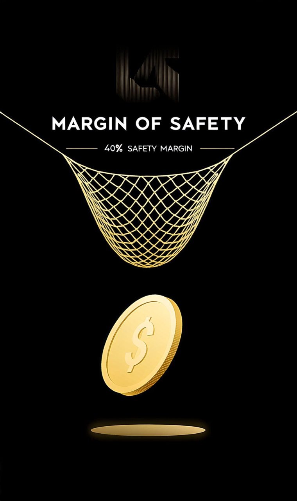

✅ 核心价值亮点
- GLP-1 减肥药市场领导者：Mounjaro 和 Zepbound 在糖尿病与肥胖症治疗领域占据领先地位，市场需求强劲
- 研发管线丰富：阿尔茨海默症新药 Donanemab 获 FDA 批准，打开新增长曲线
- 全球化布局：在北美、欧洲、亚洲均有成熟销售网络，抗风险能力强
⚠️ 核心风险提示
- 减重赛道竞争加剧：礼来与诺和诺德都在抢占 GLP-1 市场，价格和渠道都可能更激烈。
- 产能与供应链兑现压力：需求很强不等于利润立刻兑现，产能爬坡与灌装能力仍是关键约束。
- 估值容错率偏低：市场对肥胖症与糖尿病产品线已经给出高预期，任何放缓都可能带来回撤。
- 政策与药价风险：美国药价谈判、医保覆盖与海外监管变化，都会影响长期利润率。
- 单一主线依赖度上升：若 GLP-1 增长斜率回落，市场会重新审视礼来的整体成长质量。
💡 长期持有建议
建议持有周期2-4年，单个标的仓位控制在投资组合的3%-5%以内。礼来更适合作为你现有科技仓位之外的医疗健康补充，但当前位置不适合情绪化追高，优先等待业绩后回撤或产能兑现带来的更合理介入点。
📊 我的持仓与今日推荐
你目前 尚未持有 LLY (医疗健康)。
你的当前持仓分布
💡 操作思路：该推荐逻辑与你的持仓结构形成互补，建议关注分散化配置。首次建仓不超过总仓位的10%，在合理入场区间分批买入。
每日投资认知加餐
萃取价值投资大师的智慧精华
以4毛钱买1块钱的东西，但前提是你真的算清了那 1 块钱
巴菲特在历年《致股东的信》中反复强调：“投资的第一原则是永远不要亏损，第二原则是永远记住第一原则。”这句话真正的落点，不是逃避波动，而是通过安全边际（Margin of Safety）把错误控制在你能承受的范围内。买得便宜，不是为了显得聪明，而是为了在判断不完美、市场波动和意外事件发生时，组合依然活得下来。
真正成熟的投资者，不会把“便宜”理解成单纯的股价跌了很多，而会把它理解成：在保守假设下，企业内在价值仍显著高于当前价格。你买入的不是某个短期情绪修复的机会，而是一个即使未来两年不那么顺，也依然能靠现金流、资产负债表和竞争壁垒穿越周期的生意。

安全边际不是口号，而是给错误估值和市场波动预留的生存空间
反直觉事实
第一，真正危险的通常不是“跌了很多”的股票，而是“看起来很稳、但你付得太贵”的股票。高质量公司如果买在过高估值，同样会带来多年低回报。
第二，便宜不等于安全。如果一家公司的 ROE 长期低于 10%、自由现金流不稳定、负债压力高，那么即使估值只剩 8 倍 PE，也可能只是价值陷阱，而不是安全边际。
可落地执行规则
- 先看生意质量，再谈估值：优先筛选 ROE 持续高于 15%、毛利率稳定、自由现金流为正且过去 5 年没有明显恶化的公司。没有质量托底，再低的价格都不算安全。
- 给估值留足折扣：只有当市场价格 ≤ 你保守估算内在价值的 60%-70% 时，才进入建仓区间。对周期股和高波动股，折扣要求要更高，至少预留 40% 安全边际。
- 控制单笔节奏：首次买入不超过目标仓位的 30%-50%，后续只在基本面不变、价格继续回落 10%-15% 时再加仓，避免一把梭把判断全压在单一时点上。
- 把退出条件写在买入前：若核心逻辑被证伪、ROE 跌破 12%、自由现金流连续两个周期恶化，或估值透支到明显泡沫区，就要重新评估，而不是拿“长期主义”给自己找借口。
经典案例：2008 年巴菲特投资美国银行
2008 年金融危机期间，美国银行股价从 50 美元附近一路跌到不足 3 美元，市场几乎默认大型银行都会出问题。当时市场看到的是恐慌，巴菲特看到的却是价格与可恢复价值之间的巨大裂口。
他以 50 亿美元拿下优先股，年股息 6%，并附带行权价约 7.14 美元的认股权证。到 2017 年，这笔投资的总价值超过 170 亿美元，年化回报超过 20%。关键不在于他“猜中了底部”，而在于他在极端恐慌里，拿到了明显偏向自己的赔率。
关键启示：安全边际的本质不是“抄最低点”，而是在赔率显著向你倾斜时出手。你不需要每次都看得最准，但你必须在看错时也能活下来。
决策检查清单
- 这家公司未来 3-5 年的盈利模式，我能不能用一句话讲清楚？
- 它的 ROE、现金流和负债结构，是否足以支撑“便宜”两个字？
- 我给出的内在价值估算，是否用了足够保守的增长和利润率假设？
- 如果股价买入后再跌 20%，我加仓的依据会是什么？
- 如果未来一年市场不给估值修复，只靠基本面，我还愿不愿意持有？
- 这笔仓位会不会因为过大，逼我在波动里做错决定？
⚠️ 本周警示：最常见的错误
最常见的错误不是买贵了，而是在没有完成内在价值估算之前，就因为“跌很多”冲进去。价格下跌本身不构成安全边际，只有“价格低于保守估值”才构成安全边际。别把回撤当价值，也别把便宜当答案。
持仓决策区
聚合过去 7 天关键线索，但动作判断仍以持仓为核心
本文提及标的投资评级汇总
综合多家机构观点，助你做出更明智决策